Introduction and topics
- Linear algebra is one of the main topics for developing algorithms
- Biology ha a high level of noise in its data
- I should know the formula of binomial and normal distribution
- We will study tests like T-Student, ANOVA
- Slides: ww.biocomp.unibo.it/gigi/2019-2020/ECB
Linear algebra
Vectors
- Given a reference system, a vector is represented by its components on the axes
- The span of n vectors is the set of all possible vectors that you can represent by their linear combinations
- If a vector can be expressed as a linear combination of another, it is said to be linear dependent from it
- The basis of a vector space is a set of linearly independent vectors that span the full space
- 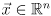 means x is a real vector in an n-dimensional space
- 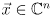 means x is a complex vector in an n-dimensional space
- Sum of vectors is done by summing their components or graphically with the parallelogram rule
-
- Difference is the same concept
- 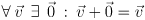
- You can only sum vectors in the same vector space
- The norm of a vector 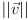 is its length
- Can be computed with the pitagorean theorem
- The norm of the sum is less or equal to the sum of the norm of the components
- This follows from the geometry of a triangle
- The scalar product of a norm is the norm of the scalar product
- The distance between points in space is the norm of the difference between the vectors defining the points
- Scalar multiplication
- 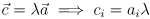
- A scalar multiplication of a sum is the sum of the scalar multiplications of the components
- Dot product, also called scalar or inner product
- You can use the notation 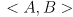
- It is used in physics to calculate work
- 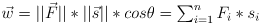
- It is a number, complex or real depending on the vectors (!)
- It is commutative and distributive
- 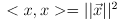
- It is positive when the angle is acute
- No cancellation rule
- Angle between vectors
- Can be calculated inverting the dot product
- A line passing through the origin can be defined as the set of points orthogonal to a vector 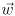
- 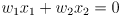
- In higher dimensions this describes an hyperplane (an n-1 dimensional object)
- All the point on a hyperplane have the same projection on its defining vector
- The projection p of on is calculated as

- An hyperplane is therefore an object subjected to the constraint 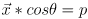
- Given that 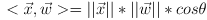 we have that 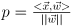
- If p>0 the hyperplane is in the direction of , if it is negative it is in the opposite direction
- Defining 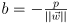 we have the canonical equation for the hyperplane
- in 2 dimensions
- 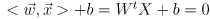 in n dimensions
- An hyperplane is useful for subdividing space
- 2 hyperplanes are parallel if their are defined by the same vector allowing for a scaling factor
- The distance between parallel hyperplanes is computed as the difference of their projections on
- The distance of a point A from a hyperplane is the projection of the point on the defining vector , minus the projection of the hyperplane on the same vector
- Hyperplanes are useful for the separation of classes of data
- Every column of a matrix can be thought of as a vector
- To make the dot product of 2 vectors using matrices you can multiply one vector for the transpose of the second
-
Matrices
- A matrix is an array of numbers arranged in a rectangular structure
- The columns of a matrix are the coordinates where the basis vectors land after the transformation
- It has m rows and n columns, it is represented as 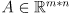
- 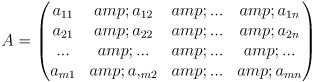
- The single 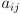 numbers are called elements
- The index of an element is always mn, meaning first row and then column
- If n=1, the matrix is called column matrix, which is a vector
- If m=1, the matrix is a row matrix
- A and B are equal if they have the same dimensions and they are equal element by element
- The 0 matrix contains all 0 elements and does not change the matrix it is added to
- The sum is defined as the sum of the respective elements
- We can sum only matrices of the same dimensions, they are said to be conformable for addition
- 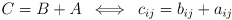
- The difference operates in the same way
- Scalar multiplication is performed multiplying all the elements of the matrix for the scalar
- The negative of A is -A, defined as 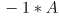
- Matrix addition and scalar multiplication are commutative, associative and distributive
- Matrix product is an operation that is defined only if the number of columns of the first matrix is equal to the number of rows of the second (the matrices are conformable for the product)
- A is of dimensions 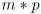 and B of dimensions 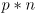, if 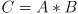
- 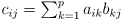
- can be computed as row by column product
- It can be defined only if the number of columns in the first matrix is equal to the number of rows of the second
- The result is a matrix with the same number of rows as the first, and the same number of columns as the second
- The product between matrices is NOT commutative (!)
- 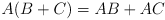
- 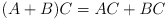
-
- Be aware!
- If we can NOT conclude that B or C are 0
- If 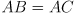 we can NOT conclude that 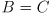
- A square matrix has m=n
- An upper triangular matrix has all the elements below the diagonal equal to 0, and a lower triangular the ones above it
- A diagonal matrix has all the elements outside the diagonal equal to 0
- A diagonal matrix with all 1 elements is the identity matrix I
- It does not change the square matrix it is multiplied to
- In this case, 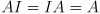
- If AB=BA, A and B are said to commute
- If A is a square matrix, it commutes with itself and with I
- If AB=-BA, A and B are said to anti-commute
- The transposition of a 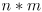 matrix is a 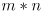 matrix, called 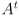, where 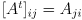
- A and are always conformable to product, in both directions
- 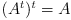
- A square matrix is symmetric if , antisymmetric (skew-symmetric) if 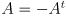
- is always symmetric
- is always antisymmetric
- An antisymmetric matrix has a 0 diagonal and antisymmetrical elements otherwise
- The inverse of a matrix A, called 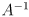, is a matrix such that 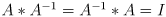
- An orthogonal matrix has its inverse equal to the transpose, 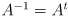
- An orthogonal matrix describes a spatial rotation
- Therefore,
- You can check for orthogonality by checking that 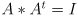
- Some properties of transpose and inverse matrices
- , but only if 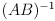 exists(!)
-
- It is possible to associate a number called determinant to any square matrix
- 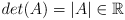
- For an order 2 square matrix, that is computed subtracting the product of the second diagonal to that of the first
- It represents the area of the unit square after the transformation
- Its sign reflects the orientation of space
- If it is negative, the transformation flips the axis
- The rank of a transformation is the dimensionality of its output space, called column space
- The column space of a transformation is the span of the basis vectors defined by its columns
- Some proprieties of determinants
- If an entire row or column is equal to 0, then the determinant of the matrix is 0
- 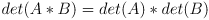
- The determinant of an orthogonal matrix is either 1 or -1
-
- How to compute the inverse of 2*2 matrices
- Given the definition if
- It follows
- A minor of a matrix A is the determinant of any square submatrix of A
- The cofactor of the element is
- To compute the determinant of any matrix you pick any row or column and sum the product of any element in it for its cofactor
- In a column
- In a row
- It is convenient to choose the row or column with most 0 for the computation
- If 2 rows are identical, det(A)=0
- If one row is 0, then det(A)=0
- If you exchange 2 rows, det(A’)=-det(A)
- The determinant of a triangular matrix is the product of the diagonal elements
- If B is obtained by multiplying every element in a row of A by ,
- For any n*n square matrix,
- If A and B are of the same order,
- The cofactor matrix of A, called , is a matrix with each element equal to the cofactor of the same element in a
- The adjugate matrix of A is the transpose of its cofactor matrix
- The inverse matrix can be obtained by dividing the adjugate of a matrix for its determinant
- Matrices can represent systems of linear equations
- The system can be represented as
- The system has a solution if the coefficient matrix is invertible
- A matrix can be thought of as a linear transformation of a vector space
- →
- A linear transformation is a transformation that preserves linearity and does not move the origin
- A rotation by an angle
 can be describe by the transformation
can be describe by the transformation
- The inverse transformation takes a transformed vector and restores the original one
- Sometimes it does not exist (!) when det(A)=0
- If det(A)=0 the transformation squishes space to a lower-dimensional vector space
- The composition of the transformations A followed by B is
- The scalar product of the transformation of a vector and the vector is equal to the scalar product of the first vector with the second vector transformed by the transpose of A
- The null space of a transformation is the set of vectors that get squished to by the transformation
-
- A trivial null space is always itself
- There is a true null space only if
- If , the only null space is itself
- The null space of a square matrix can be computed setting up a linear system of equations
Eigenstuff
- For the transformation A, if ,
 is an eigenvector of A and is its eigenvalue
is an eigenvector of A and is its eigenvalue
- An eigenvector of a transformation is a vector that is only rescaled by the transformation
- An eigenvalue is the scaling factor to which the vector is subjected by the transformation
- The vector can never be an eigenvector even though is always true
- On the contrary, it is possible that
- How to find eigenvalues for the matrix A
-
- This means that the eigenvectors are the non-trivial null space of the transformation
- It is required that , otherwise there are no eigenvectors
- The equation is called characteristic equation of A and its root allows to recover the eigenvalues of the matrix
- How to find the eigenvectors for the matrix A
- Once I have the eigenvalues , the eigenvectors can be found by solving for , using all the
- The number of eigenvalues and eigenvectors (families of linearly dependent eigenvectors) is equal to the dimensions of the vector space
- I always have n families of eigenvectors in the vector space
- The families of eigenvectors are orthogonal to each other iff the transformation is symmetric
- They define a convenient reference frame, even if they are not orthogonal
- Each eigenvalue scales one of the families of eigenvectors, meaning that it stretches one of the dimensions of the new reference frame
- Note that in a triangular or diagonal matrix the diagonal elements are its eigenvalues
- The product of the eigenvalues is equal to the determinant of the matrix
- A non-invertible matrix (also called singular matrix) has always at least a 0 eigenvalue
- The inverse matrix has reciprocal eigenvalues ( )
- The eigenvalue of kA is
- The eigenvalue of is
- Transposition does not change the eigenvalues
- The sum of the eigenvalues is the trace of the matrix
- The trace of a matrix is the sum of its diagonal elements
Complex field
- Sometimes there can be no real eigenvalues, but there are always solutions in the complex field
- This happens when the characteristic equation of the matrix has
- A complex number z is written as where
- a is called real part
- b is called imaginary part
- The reference axis of a vector space are NOT necessarily orthogonal to each other (!)
- But they must be linearly independent
Change of basis and diagonalization
- To go from one system to the other we need the representation of the old basis vectors in term of the new ones
- and
- If we have that
- It is possible to go back to the original system of reference using
- If I want to use a system of which I know the coordinate of the basis vectors in term of my current basis vectors I need to use the inverse of the matrix containing these coordinates
- If a matrix A has n eigenvectors which are linearly independent, I can write the matrix U containing all the eigenvectors, and use it to convert to a new system of reference
- The eigenvectors of A will be the new basis vectors
- I can compute A in the new reference frame forming
- Given a vector , I first convert it to the new reference frame where the eigenvectors are the basis vectors using U, then I apply A and finally I go back to the old system of reference using
- This new matrix will be diagonal (!)
- Each column will be made of one eigenvector multiplied by its eigenvalue
- It is good to choose normalized vectors for the change of basis, meaning that their norm should be 1
- In this case , meaning that areas are preserved by the transformation
- Why do I want to use eigenvectors as reference frames?
- Because the components of any vector are only rescaled by the original transformation A in this reference frame
- This makes much easier to compute transformations
- If a matrix is symmetric ( ) its eigenvalues are real and its eigenvectors are orthogonal
- If the eigenvectors are normalized , therefore
- In the same way that a linear form can be represented as all the points orthogonal to a vector with a projection p onto it, a matrix can describe a quadratic form
- A quadratic form is an equation in more than 1 variable were each term has a variable squared or multiplied to another variable
- This is represented as , where is the vector containing the variables, and A is a matrix of coefficients
- The vector is multiplied 2 times to reflect the fact that the expression is quadratic
- The second time the transpose is used in order to allow the product
- By rescaling A, we can obtain the standard form

- The matrix that describes a quadratic form is always symmetric
- If it is not singular (non-invertible), it can be diagonalised as
- If , the quadratic form becomes , defined canonical form
- In the canonical form, a contains the eigenvalues of the transformation in the diagonal
- If they are both positive, the quadratic is an ellipse
- If they are equal, it is a circle
- If they are of opposite sign, it is an hyperbole
- If they are both negative, there is no real solution
- In 3d, I can get an ellipsoid, a hyperboloid of 1 sheet or an hyperboloid of 2 sheets
Calculus
Functions
- Calculus is the study of functions
- Functions are univocal relations between the sets domain and codomain
- The function is a line passing through at with slope

- The inverse of a function correlates to
- It is the reflection of on the line
- The function is an exponential
- The function is a logarithmic function
- It passes through 1 at
- Common bases are 10, 2 and
-
-
- Logarithms are useful for performing products
-
-
-
- Trigonometric functions
- The cosine is an even function because
- The sine is an odd function because
- Sine and cosine are periodical with a period
- The secant is the reciprocal of cosine
- Trigonometric functions can be inverted only in a subdomain
- They are continuous functions
- A function is continuous at a point if the limit at that point is equal to the value of the function at that same point
- The composition of continuous function is a continuous function
- The intermediate value theorem: a continuous function between two points takes any possible value between them
- Discontinuities can be removed in some cases, but essential discontinuities such as oscillating points, jumps and infinities cannot be removed
Derivatives
- The slope of a line is defined as
- Therefore, the slope of the secant of a function between two points and is
- If we try to reduce h as much as possible we obtain the slope of the tangent at point a
-
- The tangent at a point is an estimation of the rate of change of the function at that point
- The derivative of a function is another function that describes its rate of change, it takes the value of the slope of the tangent of the original function at each point
- A function to be derivable must be continuous and must have one-sided derivatives defined at the end-points
- However, there are functions that are continuous but not derivable
- Points of non-derivability are cusps, corners, discontinuities and points with vertical tangent
- Some derivatives
- Rules for derivation
- Higher order derivatives are computed as the derivative of the derivative
- For the second derivative of f(x) we write
- In the same way, the third derivative and so on for higher orders
- The second derivative reflects the convexity of the function
- It is the rate at which the slope of the tangent increases
- Derivatives can help to study the behavior of a function
- In a function there are global and local maxima and minima, defined as extremes
- There are NOT methods to compute global extrema, but only local ones
- A local extreme is referred to an open interval
- The derivative at that point is 0
- This is NOT sufficient, it can also be a flexus
- A minimum has a derivative with positive slope when it intersects the x axis
- In other words, the second derivative is positive
- A maximum has a derivative with negative slope when it intersects the x axis
- In other words, the second derivative is negative
- A critical point of a function is a point where the derivative is 0 or undefined
Integrals
- We can find the area under a curve f(x) by adding rectangles with height f(x) and width dx, in what is called a Riemann sum
- The width dx is also called subinterval
- The area of each rectangle will be then

- If we sum the area of all the rectangles while letting dx be as small as possible we obtain a new function F(x) called integral of f(x), which for any x gives the area under f(x) from to that point
- The derivation process is insensitive to constants, so we have a family of integrals for any given function, that differ by a constant
- The difference of the integral F(x) evaluated at point b and a is the area under f(x) between the point b and a
-
- The portion of f(x) between a and b is called partition
- The fundamental theorem of calculus: the integral of a derivative of a function is the function itself
- The areas computed by integrals have a sign (!)
- They are positive above the x axis, negative below it
- Some integrals
- Rules for integration
- Finding derivatives is easy because of the chain rule, but finding integrals is hard
- Sometimes it is possible to solve an integral using substitution to rewrite a function that can be integrated
- Usually we can substitute a polynomial in x with the new variable u
-

- Since
- Therefore, in general we can write
- We can integrate by parts by inverting the product rule for derivatives
-
-
- Therefore, if we let and , and with
-
- This is useful when we recognize a product between a function that is the derivative of something and a function for which we know the derivative
- It can also be used to integrate a function for which we know the derivative by adding a 1 multiplicative constant, that we will integrate
Taylor series
- Polynomials are easier than other functions to work with, therefore approximating a non-polynomial function with a polynomial is really useful
- To find a polynomial of degree n that best approximates the non-polynomial function around the point I can proceed by layers
- The first constraint for my polynomial is that at it should be equal to the original function
-
- If , at all the terms but cancel out
- Therefore, since I can set
- In order to better approximate , I also want the tangent to to be equal to that of the original function at
- I can also desire that the concavity of be equal to that of
- I can proceed like this for higher derivatives to find higher-degree coefficients, until I get to the desired n
-
- The more degrees that I use, the better the approximation but the more complex the polynomial
- The infinite series of polynomial terms that approximate at the point is called Maclaurin series
- Note that this nice cancellation of higher-order polynomials that allow to easily compute high derivatives happens only at
- In order to approximate at a point I can construct the polynomial so to have the variable
- In this way, at
- This restore the nice behaviour observed at
- After the expansion, I can then substitute back
- The infinite series that generalizes the Maclaurin series at any point is called Taylor series
- We can give the Taylor series of at the point
- The Taylor series is an infinite sum, when we consider a certain degree polynomial we call it Taylor polynomial
- The Taylor series is convergent for some functions, like , and divergent for others, like
- The maximum distance from and the points where the series converges on is the radius of convergence of the Taylor series
Functions in more than 1 variable
- A 2 dimensional function takes 2 inputs and gives the output
-
- They are usually represented with 3d surfaces or with level curves on the plane
- A level curve or contour level is defined as the set of point that respect the constraint
- It is not possible to compute single derivatives of the function
- We can fix and compute the derivative only with respect to
- This is a 2-dimensional function that gives the slope of the tangent to the 2d curve in the plane that cuts the function at a certain value of
- This derivative of is called partial derivative in
-
- It is computed like a normal derivative, but considering the fixed variable like a constant
- Of course we can do the same fixing and taking the partial derivative in
- It is possible to take second partial derivatives by taking the partial derivative in of or the partial derivative in of
- We can also take mixed partial derivatives by taking the derivative in of , or the derivative in of
- The notation for these derivatives is and
- A fundamental propriety is that the order of differentiation does not matter (!)
- We can generalise this concepts to a function of n variables
- In any case a consider all the variables constant except the one that I am deriving
- I will have n first order partial derivatives for a function with n inputs
Gradient and Hessian
- The vector containing all the first partial derivatives of a function is called gradient of that function, indicated with
-
- The gradient evaluated at any point is orthogonal to the contour level at that point
- The gradient represents the direction of steepest ascent, because it is a vector with components which ones evaluated at a certain point are the slope of the tangent along the 2 axes
- We can see the gradient as a vector field, which always points in the direction that maximizes the increase in , with length proportional to that increase
- The matrix containing all the second partial derivatives of a function is called Hessian of that function, indicated with H
-

- Since the mixed partial derivatives are insensitive to the order of differentiation, the Hessian is always symmetric
Taylor expansion of a function in more than 1 variable
- The Taylor expansion of grade 2 of a multivariable function can be represented with gradient and Hessian
- We can consider the function as operating on a vector of variables , with dimensionality equal to the number of variables
- Let be the point at which we want to do the expansion
- Terms with degree higher than 2 will require the analogous of the gradient and Hessian at higher dimensions
- These will be multi-dimensional object difficult to treat
Local extrema in multi-variable functions
- The local extrema of a multivariable function are those points where the gradient of the function is 0
- In those points, the function has an horizontal tangent along all the axes
- In order to understand if a critical point where is a local maximum or a local minimum, I need to consider the behavior of the Hessian at that point
- This is analogous to the evaluation of the second derivative in a standard function in order to understand its concavity
- Since the Hessian is a n*n symmetric matrix, it has n real eigenvalues
- If all the eigenvalues of the Hessian are positive, the point is a minimum
- If all the eigenvalues of the Hessian are negative, the point is a maximum
- If the eigenvalues of the Hessian are some positive and some negative, the point is a saddle point is , and a more complex shape in other dimensions
- When the Hessian is not diagonal, it can be diagonalized so that we can have the eigenvalues on the diagonal
- This corresponds to rotating the system of reference so to align it to the directions of more rapid change in concavity
- Note that I do not need to go back to the previous system of reference, from the Hessian I only want a qualitative information on the concavity, not a number
Constrained optimization problems (Lagrange)
- A constraint optimization problem deals with finding the extrema of a function on more than one variable subjected to a constraint
- This has many applications, for example we may want to maximize a function while there is a physical constraint on the variables that we cannot avoid
- The constraint is a set of points that respects a condition
- An example is the constraint , which means that we are limited to the points on the unit circle in the x,y plane
- In 3d we can project the constraint on the surface of our function and the problem translates to finding the highest point on the circle
- It is easier to visualize the problem in term of contour lines in 2d
- The solution consists then in finding a point where a level curve is tangent to the constraint
- Generalizing to any number of dimensions, if we consider that a level curve is an object that respects the condition , the constraint optimization problem can be translated in finding the points of tangency between the constraint curve and the level curves
- Since the gradient of a function is perpendicular to the contour level, we can solve the problem by finding the points where the gradient of the function and that of the constraint are parallel
- If the 2 vectors are parallel, they are the same vector scaled by a constant
-
- The factor is called Lagrange multiplier
- We have therefore n+1 variables to find (all the coordinates of and ) and n+1 equations
- n equations are embedded in

- The remaining equation is the constraint itself
- All these equations can be expressed in a compact way with a new function, called Lagrangian
-
- It is not necessary to form the Lagrangian when computing by hand, we can just solve a normal system of equations
- In computational applications however, computers are much faster in solving the gradient of the Lagrangian, and this is a much more compact way of representing the same information
- The solutions of the constrained optimization problem then corresponds to finding the values for and for which the gradient of the Lagrangian is 0
-
- The solutions can be more than one, however they are usually in a number that can be easily computed
- I can then use my solutions as an input for and find the one that is higher, or lower, depending what I am looking for
- The Lagrange multiplier associated with a specific solution tells me how much the function is sensitive to variations in the constraint
- If we have multiple constraints, we will have a Lagrange multiplier for each constraint
- The constrained optimization problem can be used to solve the problem of information entropy: maximize how much information a signal carries
- We can think of a signal with n different possible values
- Each value can occur with the respective probability
- The Shannon entropy for the signal is given by the function
![S=-\sum_i [p_i\ln(p_i)]](eqn268.png)
- If we want to maximize the information carried by the signal, we have to maximize the function

- Since we are talking about probabilities, we are under the constraint
- We have a function and a constraint: we can write the Lagrangian
- By solving we find that
- All the are equal and they must sum to 1, therefore
- By substituting on the original function then we find that the maximum information content of the signal is
![S_{max}=-\sum_i [\frac{1}{n}\ln(\frac{1}{n})]=\sum_i [\frac{1}{n}\ln(n)]=\ln(n)](eqn275.png)
Statistics
Set theory
- A set is an unordered collection of objects, also called space
- An object that belongs to a set is said to be an element of that set
- means that the object x is an element of the set C
- A subset of a set is another set such that all the elements it contains are also contained by the main set
- A set without elements is called null set, denoted by
- The union of 2 sets is another set containing all the element contained in one of the sets, or in both
-

- It corresponds to a logical OR
- The intersection of 2 sets is the set containing the elements that belong to both sets
-
- It corresponds to a logical AND
- If the 2 sets are mutually exclusive
- The complement of a subset is the set of all elements in the set but not in the subset
- De Morgan’s laws
- Set union and intersection are commutative and associative
Probability
- Probability is a mathematical model for random phenomena
- A phenomenon is probabilistic if the outcome of an experiment is uncertain, but over large numbers we observe a regular distribution
- An experiment is any procedure that can be repeated in theory an infinite number of times and has a well-defined set of possible outcomes
- The sample space of an experiment is the set of all its possible outcomes
- An event is a subset of the sample space
- In a frequency approach, probability is the ratio between the number of favorable events and that of total events
- Let C be the sample space of an experiment such that , containing n elements
- Let F be an event subset of C containing all the outcomes that are considered favorable,
- Let F contain m elements
- Then, the probability that the event F will happen is given by
- Probability can also be viewed as the confidence in an event happening
- A probability is a number between 0 and 1
- The sum of the probabilities of all the possible outcomes of an experiment is equal to 1, meaning that there will definitely be 1 outcome
- The probability of 1 of 2 events happening is equal to the sum of the probabilities minus their intersection
- If 2 events are mutually exclusive (they do not have an intersection!), the probability of their union is the sum of their probabilities
- The intersection of 2 events that are independent and not mutually exclusive is the product of their probabilities
- The conditional probability of given is represented as
- If the events are independent,
- If they are not independent,
- Conditioning on an event means that the total event space is reduced to that event
- The intersection of 2 events that are NOT independent and NOT mutually exclusive is given by
- 2 mutually exclusive events cannot be independent, and vice-versa
- The bayes formula: is different from

-
- Note that this is just a rearrangement of the intersection of non-independent events
- To test if A and B are independent events, we can test that both be true
- The odds ratio of 2 events is a statistic that quantifies the strength of the association between them
-
- If the events are independent
- Frequently is used
- A partition of the sample space U is an event such that the sum of all the is equal to U itself, without holes and sovrappositions
- If is a partition of U and A a subset of U, then
Counting
- A permutation is an ordered arrangement of objects
- A combination is a set of objects, without considering their order
- It is expressed as , which is read “n choose r”
- We can have situations in which the same object can be drawn an infinite number of times
- In this case we talk of replacement
- An example is the possible permutations of letters in a 10bp DNA sequence
- A,T,C,G are the objects, but each of them can be drawn more than once
- In other situations an object can be drawn only once
- I take objects from a physical stack of objects: I cannot take it again after the first time
- Permutations with replacement: the sequence of numbers that I can get from 3 dice rolls
- Let n be the number of possible outcomes
- In the case of a dice, there are 6 possible outcomes so
- Let r be the number of outcomes that I consider (the length of the sequence of outcomes)
- For example, how many times I roll my dice
- Then, the number of permutations p is given by
- This is the possible sequences of 3 numbers that I can obtain from 3 dice rolls ( )
- Permutations without replacement: in how many ways, considering order, I can sit 6 people in 3 chairs
- Let n be the numerosity of my object pool
- In this case, there are 6 people so
- Let r be the number of objects that I will extract from the pool
- For example, how many chairs do I have
- We can reason that the first object can be 1 of the n different objects available, the second 1 of the n-1 remaining and so on
- Therefore, the number of permutation without replacement is given by
- We can cleanly express this with factorials
- Then, the number of permutations p without replacement is given by
- This is the possible ordered ways I can sit 6 people in 3 chairs ( )
- Combinations without replacement: how many different unordered groups of 3 people can I get by choosing from a pool of 6 people
- Let n be the numerosity of my object pool
- In this case, there are 6 people so
- Let r be the number of objects that I will extract from the event pool
- For example, how many people will be in the final group that I want to extract
- We can reason that the number of combinations without replacement is necessarily a subset of the number of permutations without replacement
- It is the number of permutations minus the number of permutations containing the same elements in a different order
- The number of permutations would be , and each unique set can be expressed in different combinations
- The final set of combination would be of the set of permutations
- Therefore, the number of combinations without replacement is given by
- This is the number of possible different groups of 3 people that I can form from a pool of 6 people ( )
- Combinations with replacement: the unordered set of numbers that I can get from 3 dice rolls
- Let n be the number of possible outcomes per event
- In the case of a dice, there are 6 possible outcomes so
- Let r be the number of outcomes that I consider
- For example, how many times I roll my dice
- We can reason that the event pool is made of n objects that get regenerated when I choose one of them, but not for the last one since I will not choose after that
- Therefore, we can choose r objects among n+r-1 non-replaceable objects
- Then, the number of combinations with replacement is given by
- This is the possible sets of 3 numbers that I can obtain from 3 dice rolls ( )
Discrete distributions
- Probabilities can be described with distributions
- I represent with a capital letter the random variable, with a normal letter one of its values
- A random variable is a way of mapping the outcome of an experiment to a number
- Discrete variables can only take specific values
-
- The probability distribution is defined by the function , which for every gives the corresponding probability
- The cumulative distribution is given by the function , which for every gives the probability for a value
- A discrete distribution can be normalized, meaning that it is rescaled so to have the total sum of probabilities equal to 1
- Discrete distribution are represented with histograms
- The probability mass function of a discrete distribution (PMF) is a function that given a value of the random variable X, it produces a probability of that occurring
- It is what defines the distribution itself
- If we plot the random variable and the PMF (the probability!) I obtain the histogram of the distribution
- The mode of a discrete distribution is the value that occurs with the highest probability
- It is the highest peak of the histogram
- If there are 2 peaks, the distribution is called bimodal
- The median of a discrete distribution is the value of the random variable for which
- The first step in computing the median is to order the observations from lowest to highest
- If the number of observations is odd, the median is the middle value in the series
- If the number of observations is even, the median is the average of the 2 central observations
- In the same way, the values of x that split the distribution in quarters is called quartile, in fifths quintile and so on
- The distance between the first and the third quartile is called inter-quartile range, and it is a measure of the spreading of the data
- The mean or average of a discrete distribution is the expected value of the random variable X (it can be represented as ,
 or )
or )
- It is also called first moment of the random variable, while moment represents the expected value of
- , where is a function defined over discrete random variables and is the probability distribution
- It is essentially a weighted average of the probabilities for a function of X to have a certain value
- In the simplest case , therefore I am just taking the mean value of the variable
- For an empirical distribution it is calculated as
- The variance is the mean squared distance of x from the mean of the distribution
-
- It is a measure of how much the distribution is spread out
- The standard deviation has the same meaning of the variance, but is more useful because it has the same dimensionality of the random variable x
- Some general properties of expected values and variances
- If and only if and are independent random variables
- The covariance of 2 random variables describes how their respective variations are related
-
- If the 2 random variables are independent
- For any pair of random variables
- The Bernoulli distribution models a single trial that can have 2 mutually exclusive outcomes
- Let’s call the 2 outcomes success and failure, with probabilities p and 1-p
- Let the random variable X be 0 for failure an 1 for success
- The PMF is
- The Bernoulli distribution is obvious, but Bernoulli trials are at the foundations of many discrete distributions
- The binomial distribution models the number of successes in n independent Bernoulli trials
- Let the same conditions of the Bernoulli trial hold, so 2 mutually exclusive outcomes with probability p and 1-p
- Let the random variable X represent the number of successes in n trials
- The PMF is
- is the probability of having a specific sequence of length n with x successes
- is the number of different combinations of x successes that I can get in n trials
- So the PMF is the number of possible sequences of outcomes where X=x, times the probability of each of them
- The mean is the number of trials times the probability of the favorable event
- The variance is
- The Poisson distribution models how many Bernoulli successes will occur in a given unit of a continuous axis (time, volume, …), when the probability of the success is constant
- The random variable X counts the number of successes in the unit of time (or area, volume, …)
- The PMF is
- We can consider that in an interval of length 1, we have a mean number of successes called
- Suppose we subdivide the interval in n parts of equal length
- Therefore, if n is big enough each subinterval will have a probability of having 2 successes and the probability of having a success

- We can see the process as a binomial distribution with probability of success , with n trials
- If we want the probability of having x successes in the unit interval, we can phrase it as the probability of having a success in exactly x of the subintervals
- We therefore have
- Let’s consider , so what happens in infinitely many intervals that are infinitely small
-
- The mean and the variance are both equal to
- is the mean number of successes in the given unit interval
- Other discrete distributions
- The geometric distribution describes the probability of waiting for X Bernoulli trials for seeing the first success
- The negative binomial or Pascal distribution is a generalization of the geometric distribution that describes the probability of waiting for X Bernoulli trials for seeing n successes
- The hypergeometric distribution models the number of successes in n trials like the binomial, but considers the case of non-independent trials
- Maximum likelihood estimation is a technique that allows fitting a distribution to my data
- Likelihood is a concept different from probability
- Probability refers to the observed data with respect to a certain distribution
- Likelihood refers to having a certain distribution parameter given the data
- I want to find the best parameters t for my data d, supposing they follow a certain distribution m
- I can solve for
- Supposing that my model is , I have a likelihood function
- Since I want to find a maximum of this function, I can set and find the correspondent
Continuous distributions
- Continuous variables can take infinite values in any interval
-
- In a continuous distribution the function does NOT represent a probability, but a probability density (!)
- It is meaningful to talk about probability only over an interval (!)
- The cumulative probability is , and for a normalize random variable
- The PDF is the derivative of the cumulative probability
- The mean is
- It is the continuous version (integral) of a weighted sum
- The variance is
- The uniform probability distribution has a constant value in an interval and 0 outside of it
- The PDF is
- The mean is
- The variance is , it can be derived by integration
- The normal or Gaussian distribution is the most important continuous distribution
- For the central limit theorem, the sum of a number of random variables approaches a normal distribution as the number of variables increases
- The PDF is
- To say that a random variable follows a certain normal distribution, we can write
- The mean of the normal distribution is
- The variance of the normal distribution is
- The points and are the flexus points of the curve
- The integral between and is
- The integral between and is
- The integral between and is
- The standard normal distribution is a normal distribution with mean 0 and variance 1, indicated with z
-
- Any distribution can be normalized by introducing the standardized variable z such that
- Central limit theorem: the sample mean is normally distributed for large sample sizes, regardless of the original distribution of the population
- We can assume that our data is normally distributed if the sample size is large enough
- The normal distribution cannot be integrated analytically, therefore the integral is computed with tables for the standard normal distribution or via software
- In an n-dimensional space the normal distribution is computed with vectors and matrices
- The estimated mean of the distribution of a set of normally distributed data is
- This can be derived by a long integration of the formula for the normal distribution
- This is an unbiased estimate
- The estimated variance of the distribution of a set of normally distributed data is
- The sample variance underestimates the variance of the population, as can be derived by expanding the variance formula
- Sometimes the variance of the sample is named
 to differentiate it from the real variance
to differentiate it from the real variance
- The sample mean is normally distributed with mean equal to the mean of the distribution and variance equal to the variance of the distribution divided by n
- The sample variance is distributed following the distribution with n-1 degrees of freedom
- The degrees of freedom are the number of independent
- The distribution is a family of asymmetrical distribution for different degrees of freedom which models the distribution of the sample variance of a normal population
- The distribution of the square of a normal distribution is a distribution with
- The Student t distribution is the distribution of the variable , where z is a standard normally distributed random variable, u is a random variable with distribution with v degrees of freedom, and z and u are independent
- It is used in the Student t-test to compare 2 sample means and determine the probability that they come from the same population
- If we draw n independent observation from a normal population the quantity has a t distribution with
- It is similar to the normal distribution, but it is more spread out
- Its PDF is quite complex
- It converges to the normal distribution for
- Its areas are computed via tables or software
- The Gumbel or extreme value distribution is used to model the extreme values of a number of samples of various distributions
- It was invented to model the distribution of extreme temperatures during the year, and it is used for modeling rare phenomena
- The PDF is the exponential of an exponential, it decreases very, very fast
- The Gumbel distribution is used by BLAST for calculating the E-value
- The expected score E of a match in a database is the number of times that my sequence would obtain a score S higher than the observed one in a random database of the same size
rewied until here
Hypothesis testing
- When performing an experiment, before analyzing the result I need to formulate hypotheses and assumptions
- I should state a null hypothesis that I want to disprove
- I should state what are my assumptions: statistical independence, distribution of the data…
- I can compute the needed statistics from my data
- I can check the probability of observing my statistics under the null hypothesis, for the distribution given by my assumptions
- If my statistics are more extreme than the critical value chosen, I can reject the null hypothesis
- If my statistics are not more extreme, I fail to reject the null hypothesis
- I can never accept the null hypothesis: it is assumed true from the beginning, and failing to disprove does not mean to prove a hypothesis
- This is a logical fallacy known as argument from ignorance
- The p-value is the conditional probability of observing a result more extreme or equal to the test statistic given the null hypothesis
-
- It was invented by Fisher as a rough estimate of the strength of evidence against the null hypothesis
- The significance of a test is the probability that the test rejects if it actually holds
- The power of a test is the probability that the test rejects a false null hypothesis
- In any test, we want
 and
and  as small as possible
as small as possible - The threshold (critical value) used depends on the significance that we desire
- In biology it is common to use
- In physics it is used or even lower
- The critical value is the value for which the area under the curve from that value to the extreme of the distribution is equal to the desired p-value
- The p-value is currently heavily criticized
- From the view of Fisher himself, the p-value is a measure of significance, importance of a result, but not a proof: it requires further testing
- It is often misinterpreted by researchers
- It does not give any information on the magnitude or physical meaning of the observed statistical difference
- Two studies can have similar results but very different p-values because of different sample sizes
- and have a very different meaning
- We can and should use both sides of the distribution for calculating p-value, but sometimes one-sided values are reported
- This gives to the p-value more assumptions based on the belief of the researcher, and it is not fair
- The Bayesian approach to data validation is an alternative to the p-value
- It aims at giving a more useful estimate:
- It is computed with the Bayes theorem from p-value, and
- I need the a priori probability of the observation, which usually is not available
- The Bayesian factor is the ratio between the probability of my data give the null hypothesis and union of the probabilities of my data given any other hypothesis
- The Fisher test is aimed at determining the probability of observing the data under the assumption that the categories are independent
- I prepare a contingency table where I put the number of subjects in each combination of categories
- From the table I take the various coefficients and compute the probability of obtaining that table under (no association between the variables)
- The probability is computed using the binomial
- The output is a number between 0 and 1 which is the probability of obtaining that table
- It does NOT give the p-value because it doesn’t consider tables that are more extreme of the observed one
- In a 2*2 table with coefficients a, b, c, d and total number of subjects n
- When I do n tests on the same data, I can expect to have many false positives, in a way that is proportional to n
- The simplest correction that can be made to preserve the significance is the Bonferroni correction
-
- The actual significance to be accepted is the original significance divided by the number of tests
- Sometimes it is too strict, it fails to reject that are false
- Another common correction is the Benjamini-Hochberg
- The means of samples from the same population are normally distributed with a mean equal to the mean of the population and variance equal to the variance of the population divided by the size of the samples
- The sample mean is
- The mean of the population is best approximated by the mean of the sample means
- The variance of the sample mean is the variance of the population divided by the sample size
-
- The unbiased variance is used, computed by
- The z-test uses the z-tables to compute the probability of observing a certain standardized value
- If our gives us a true population mean ( ), we can compute the standardized variable
- I use beacause I need the standard deviation of the sample means, not of the samples
- Note that for the z-test I need the real variance of the population, , not its estimate based on the sample variance
- I need to use the 2 tails if I cannot completely exclude deviations in one direction
- If instead that the actual variance of the population I use its estimate, the unbiased sample variance S, I need to use the t-distribution with n-1 degrees of freedom
- The variable t is computed as
- The t-test can also be used to compare the means of 2 samples, to test if they are significantly different
- In this case I require the t-distribution with 2n-2 degrees of freedom
- The formula for computing the variable t is quite complex
- The ANOVA (ANalisys Of VAriance), also called F-test, is a generalization of the t-test used to compare k means
- When comparing 2 means, the ANOVA reduces to the t-test with relation
- It assumes that the samples are random and the errors are independent, that the populations are normally distributed and that for each condition the populations have the same variance
- The one-way ANOVA compares means of different samples (treatments in the ANOVA jargon)
- The is that all the means are equal
- From the different treatments we can compute the means for each treatment and the global mean of all data
- We can compute the treatment variances and the global variance in the same way
- The total variance can be partitioned in random variation and in variation between treatments
- The sum of squares within (SSW) is computed as
- Each value is compared to the mean of its treatment
- The sum of squares between (SSB) is computed as
- Each treatment mean is compared to the global mean and multiplied for the number of samples in the treatment
- It can be proven that the sum of squares total (SST) is equal to the sum of SSW and SSB
- We can then define the variable
-
- It is the mean square within
-
- It is the mean square between
- The variable f is distributed following the Fisher-Snedecor F distribution
- There is one distribution for each combination of degrees of freedom within and between
- The null hypothesis can be rejected when f is high enough
- If
 the variability between is equal or lower than the variability within
the variability between is equal or lower than the variability within
- Two-way ANOVA can be used to compare the response to different combination of 2 variables
- It can be used in different treatments defined as different combinations of doses of 2 different drugs
- There are 3 , if I call the treatments A and B
- No difference in means due to factor A
- No difference in means due to factor B
- No interaction between A and B
- It tests for the effect of the single variables and for interaction between them
- If we have the variable A and B, SST is composed of SSW, SSB(A), SSB(B), SSB(A,B)
- I have a SSB for each treatment level, and for any treatment combination
- In order to be powerful, if we increase the number of treatments we need a lot of data
- It is frequently used for the analysis of expression data
- The -test is used to determine if the unbiased sample variance is significantly different from the variance of the population
- We can define the sum of squared distances from the mean
- Q is distributed with a distribution with n-1 degrees of freedom
- The Pearson’s test is used to determine if some data fits a certain distribution, with certain parameters
-
- This variable follows a distribution with n-s-1 degrees of freedom, where s is the number of parameters that define the specific distribution tested
- is the observed value, the expected value given the model
- Non-parametric tests make very few assumptions about the data
- They do not estimate parameters from the data and do not assume any distribution
- They can be used with qualitative data and ordinal data
- Ordinal data relies on median instead of mean
- They are not susceptible to outliers
- They are tipically used when the data are too skewed for a paramatric test
- They are less powerfull than parametric tests, they are more susceptible to type II errors
- Each parametric test has a non-parametric alternative
Correlation and regression
- Correlation can be measured by a coefficient
- Given the variables x and y, we can compute and
- If we graph a point ( we define the centroid of the data
- The covariance is a good measure of linear dependence between x and y
- We can then define the Pearson’s correlation coefficient
- It is a number between -1 and 1 because it is rescaled by the standard deviations of x and y
- The Pearson’s coefficient tests only linear dependency (!)
- If we can NOT say that x and y are independent, they can have higher-order dependencies
- The significance of the coefficient is strongly dependent on the number of points
- The value of the coefficient per se does not mean anything, it has always to be tested
- It can be tested using the Student distribution
- The Person’s coefficient is very sensitive to outliers
- Always look at the graph before drawing conclusions, because it can be different fro what you think
- CORRELATION DOES NOT IMPLY CAUSATION
- The Spearman’s correlation coefficient measure monotonic dependency
- It is the Pearson’s coefficient of the rank of the variables, it is its non-paramtric alternative
- If we make a ranking of values from the lowest to the highest, the rank of a value is its position in the ranking
- We have to test the significance also of this coefficient, that depends on the amount of data
- The Matthews correlation coefficient (MCC) is used for categorical variables
- We can assign the values 0 and 1 to the categories in both values
- We can take the Pearson’s coefficient of these values, which is the MCC
- It is used in machine learning in a table real vs predicted
- When the dependency is more complex, we can use the mutual information
- It will be a topic for next year
- If we have data with a good Pearson correlation, we can define a linear regression
- One technique is to minimize the distance between the points and the line (best fit with least squares)
- We want to minimize the function
- The same technique can be applied for fitting any polynomial
- If I use a high degree polynomial I risk doing overfitting
- I have overfitting when the number of data is of the same order of the number of parameters
- In overfitting the values of the parameters are often absurd (really high in absolute value), without any physical meaning
- The error can be estimated considering overfitting by giving a penalty for high coefficients
- To test the quality of a model we need to use data not used for building the model itself (!)
- Cross-validation is very dangerous
Principal component analysis
- Principal component analysis is used with high-dimensional data
- It reduces the number of dimensions, so to be able to plot the results
- A good idea to preliminarily decrease the number of variables is to remove the ones with the lowest variance
- If we want to find a better system of reference, we can choose the axes with 0 covariance
- I can build the covariance matrix of the variables
- The covariance matrix is symmetric and therefore it can be diagonalized easily
- The change of basis matrix U is orthogonal and therefore represents a rotation
-
- If I rank the eigenvalues from highest to lowest, I can choose to use only a subset of dimensions that maximizes the variation
- PCA can discriminate only linear dependencies (!) by rotating the frame of reference so to align it with the variation
- If a variable has a relatively high covariance, it will dominate the principal components
- It makes sense to compare variances only if they are in the same unit of measure
- I can standardize the variables so to have unit variance and 0 mean to avoid this problems
- Instead of a covariance matrix, I can do PCA with a correlation matrix
- The correlation of a variable on each of the eigenvectors is called loading
- To choose the number of principal components, a common rule is to exclude the dimension with